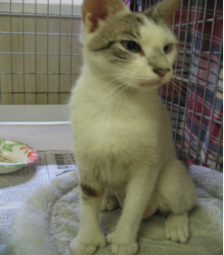
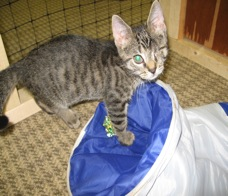
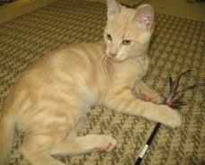
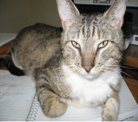

Cat Crew Annual Newsletter for 2012
Welcome to the second annual Cat Crew newsletter. Our second full year working to reduce the homeless cat population in and around Norristown has the dubious distinction of being successful.? That is, our small volunteer staff of 7 (plus or minus) dedicated people were busier than ever performing trap/neuter/return (TNR), fostering cats or kittens, holding monthly adoption days at the King of Prussia Petco store, and raising funds to continue our work.? We were able to help more cats this year than ever. But there is so much more work to do.
- Our totals for the year are:
- Over 200 cats sterilized:
- 160 feral/semi-feral cats trapped, sterilized, and returned to the colonies where they are being cared for in basic ways (food always, shelter if we can). Note that most of these cats were trapped by Joanne Moody in Norristown.
- 40 cats adopted into forever homes
- 3 cats saved from serious injury, abuse, or illness. This includes Buddy, who was found with his intestines protruding from his side.? Dr. Murarka of Compassion Vet Clinic performed surgery and saved his life. He was then adopted into a fantastic home.
For medical care/spay/neuter we have always used low cost clinics and discounted services by participating local veterinarians.? These include Forgotten Cats Clinic in Willow Grove, Conshohocken Vet Hospital, Plymouth Animal Hospital and Compassion Vet Clinic.?? Still, costs are high.? Last year one of our volunteers had a great idea, send a letter to all local veterinarians asking for one free spay or neuter procedure per month.? I was skeptical, but alas we did have one positive response.? This doctor prefers to remain anonymous, but we'd like to make it known that our sincere gratitude goes to the entire facility staff for their compassion and generosity.
As our organization grows we have more "eyes" on the street seeing homeless cats (and dogs) in dire need of help.? It's frustrating for all of us to have to pick and choose the animals we can help because of personnel or funding resource limitations.? We try our best though, and the reward comes when we meet caring people who want to provide forever homes for our fosters.? I thank all the families who adopted from us this year!! ?(And a special thanks to the barn cat participants).? You all have made a difference in the lives of not only the cats you've adopted but others who can subsequently be brought in to safety.?
This year, as in previous years, we truly appreciate the help from Spay and Save, Inc.? for EVERYTHING they do to help us rescue cats in need.
Additional thanks go to the Petco store staff in King of Prussia who offered us the second Saturday each month to hold adoption days.? This enabled us to find homes for most of our foster cats this year.
Fundraising efforts have been increased due to the help of Anne R., the best baker in all of Norristown.? Anne and family members held multiple bake sales bringing in much needed funds for spay/neuter and medical expenses. Thank you thank you thank you!
Our group depends on the generosity of animal lovers to keep us going, financially and motivationally.? We see the worst of what can happen to homeless pets on the streets, but we also find the best in the folks who support what we do.? These are the people who adopt our cats, the people who take the initiative to provide shelter and food to street cats on their own; those who lend a hand when they can to help us trap, transport and foster, and those who donate.?
who take the initiative to provide shelter and food to street cats on their own; those who lend a hand when they can to help us trap, transport and foster, and those who donate.?
Thank you in advance for any help you can give us in 2013.? Monetary donations are fully tax deductible and can also be made on our website at www.catcrew.org
My primary wish for 2013 is to see less suffering, animal and human- worldwide, but especially here in our local community.? I do believe that the more people we educate on the plight of homeless, unsterilized pets on the street the better hope we have to reduce their numbers and, consequently, their suffering. Unfortunately the task is too large for any one rescue group.? Fortunately there are many people who do care and who make the effort to help.
There are so very many homeless cats out there. It's an endless job but we continue our work, hoping to make a difference cat by cat!
Below are a few of the lovable cats who have found their perfect forever homes this past year.
|  | Barbie found abandon in Norristown |
|  | Lucas-found as a tiny kitten with infected eyes in Norristown, had to have eye surgically removed. |
|  | Lenny found abandon in Norristown |
|  | Brando found abandon in Norristown |